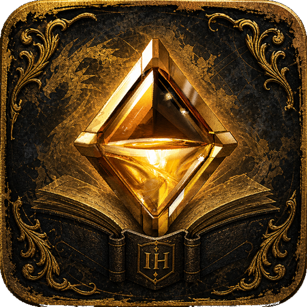

GW2 In-Game Helper
In-game sites & Discords. One DLL. No memory reads.
GW2 In-Game Helper opens useful Guild Wars 2 websites and community Discord invites inside the game — Wiki, builds, tools, guides, farming, and more.
Players install a single DLL. No memory reads; official Nexus APIs only.
Install: copy
GW2-InGame-Helper.dll to
<GW2>/addons/. Open with Ctrl+Shift+H
or the QuickAccess icon.
What’s new in 1.4.1.8
- Full-page GW2-themed homepage (cover atmosphere, gold frame, brand hero)
- Browse panel + Open Ext (from 1.4.1.6 / 1.4.1.5)
Included sites
| Category | Sites |
|---|---|
| Help | How to use |
| Official | Guild Wars 2, GW2 News, Raidcore |
| Wiki | GW2 Wiki, Game Updates, Legendaries, Mounts |
| Builds | Snowcrows, MetaBattle, MetaBattle OW, Accessibility Wars, Gw2Skills Editor |
| PvP | MetaBattle PvP |
| WvW | MetaBattle WvW |
| Tools | gw2efficiency, Legendary Tracker, Blish HUD, GW2Timer Events/Map, Meta Timers, Crafts, Music Box, Peu |
| Guides | Raid Food, Guildjen, Living World, Leveling, Earn Gold, Griffon/Skyscale, Mukluk, GW2 TLDR, TLDR Raids/Fractals |
| Farming | Fast Farming |
| Discord | Official, Community, builds, training, PvP, WvW, farming, trading, Raidcore, Central Hub |
Discord invites
- Official GW2
- Community
- Snowcrows
- MetaBattle
- Guildjen
- Mukluk Labs
- Accessibility Wars
- Skein Gang
- Fractal Training
- Raid Academy
- GW2 University
- Crossroads Inn (EU)
- Raid Training Initiative (EU)
- Welcome to PvP
- WvW NA Alliance
- WvW EU Alliance
- Fast Farming
- Raidcore
- Overflow Trading
- GW2 Central Hub
Use Open Ext in the toolbar for Discord invites. Invite pages may also open in the embedded browser.